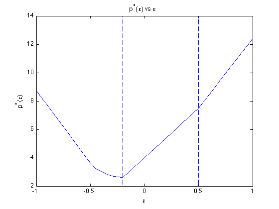

Exercise 5.33: Parametrized l1-norm approximation
A = [-2 7 1; ...
-5 -1 3; ...
-7 3 -5; ...
-1 4 -4; ...
1 5 5; ...
2 -5 -1];
b = [-4 3 9 0 -11 5]';
d = [-10 -13 -27 -10 -7 14]';
epsilon = [-1:0.05:1];
p_star = zeros(size(epsilon));
fprintf(1,'Computing p*(epsilon) for -1 <= epsilon <= 1 ...');
for i=1:length(epsilon)
cvx_begin quiet
variable x(3);
minimize ( norm( A*x + b + epsilon(i)*d, 1) )
cvx_end
p_star(i)= cvx_optval;
end
fprintf(1,'Done! \n');
plot(epsilon, p_star)
line([-.2 -.2], [2 14], 'LineStyle', '--')
line([.5 .5], [2 14], 'LineStyle', '--')
xlabel('\epsilon');
ylabel('p^*(\epsilon)');
title('p^*(\epsilon) vs \epsilon');
Computing p*(epsilon) for -1 <= epsilon <= 1 ...Done!
